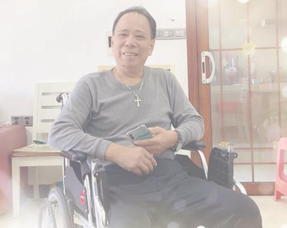
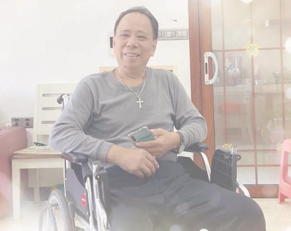

▲李悔之：我的遗书
 

【李悔之（本名李立群）先生，服剧毒农药后，因抢救无效，于2021年7月23日上午8时53分去世。】
胡、温时代开始，本人在网上发表文章，呼吁公平正义，批评诸种弊端，力推体制改革……屡屡被评为“全国百大公共知识分子”、“影响中国百大名博主”等称号。然而，自从换届后，特别是“伟 大 的中国梦”之后，言 论 空 间愈来愈逼仄。到2017年“十九”大，我突然被列为“部级”W稳对像（是惠州市“唯一”一一多位国 保告诉我这一“荣誉”）。而且是广东惠州市和河源市两市“共管”，因我户口所在地在河源龙川县，所以我回龙川时，由河源龙川县国 保负责监控。由于我极少回老家河源市龙川县，平时监控主要由惠城区国 保大队负责（市国保在重要节日节出现一下）。电话受监控，我到外地，或外地朋友到惠州探访时，皆须向国保部门“说一声”（有数次外地朋友来惠州邀我吃饭受阻）。
2020年3月，本人因患脑溢血成为“二级残疾”、走路要靠拐杖辅助的情况下，我曾多次指出要求能否解解除监控，城区 国 保如实告知：他们会向上面汇报我的请求，至于何时能解除，他们无权作出决定。
今年6月19日下午，城区国 保徐指导员带市局国保大队覃副大队长、黄教导员（女）来我家中“拜访”（估计是为建党一百周年前来），我再次提出：本人患病在身，为后患症所困，已无能力“反党”了，监控能否解除？回答仍跟去年一样！
建党100周年的前两天，即6月29日上午，市国保大队姜大队长，以及覃副大队长两人又来家访（显然是为建党一百周年再次前来），姜大说很久没看望“李老”了……我又提出何时能解除“处遇”问题，他也没正面回答此问题。
无论在国内、国外发文，我都署以真名实姓；举凡撰文内容，皆在宪法允许范围内，立足于建设性批评，素无偏激极端之言，缘何几年成为部级“W稳”对象？……去年在身患脑溢血后，我已一年半时间没有发表过任何批评性意见，但凡节日，监管却没降还升一一今年“七一”前，惠州市国保大队覃副大队长及黄教导员先后主动要加我微信（之前，只有城区国保大队周副大队长和徐指导员主动加我微信），“七一”之前两次“慰问”，7月16日上午，城区国保大队周副大队长又来电“谈心”……所有这些都预示着什么可想而知。
古贤一再教导统治者：“防民之口，甚于防川。川壅而溃，伤人必多，民亦如之”，而今呢？执政者不是用对话的方法坐下来好好听取知识分子的意见、批评，而是动用国家专政机器，釆用胡萝卜加大棒政策，使得知识分子纷纷屈服于现实之下，无言再敢上书言事，无人敢发表异议意见，整个国家万马齐暗，庙堂之上一片佞媚阿谀声……把“把权力关进制度笼子里”，结果是把批评者、异议者关进笼子里！
我希望看到的是：执政者能心平气和坐下来听听异议人士的意见和建议，不是总看到公安机关的同志上门……伟大领袖说：“除了沙漠，凡是有人群的地方，都有左中右，一万年以后还会是这样。”一一既然有左中右，怎能永远用国家机器弹压一方？总是让政治立场相左一方看不到前途和希望？贵党专政已经七十年了，“七一”讲话，让人强烈感受到的是向原教旨的大回归，上层建筑的“与时俱进”变成了“与时俱退”，让人根本看不到一点希望！难道，这就是生为中国人的不幸和悲哀？？？
“七一”也是一场唯物主义者的伟大盛宴，它令人想起了狄更斯名言“这是最好的时代，这是最坏的时代”一一能走的都去美帝大加拿去澳洲了，剩下不能走的只好“一心跟党走”了……可“英特纳雄耐尔就一定要实现”，历史当然就虚无主义！……
没有人能看清前途和希望！从来没有那样绝望过！当然，有些人还坚信“天会亮的”一一因为，他们小时候电影《永不消逝的电波》看太多了……
说了十几二十年了，不说那么多了，说了也是白说！
作为肉体上每天都饱受脑溢血后遗症折磨的人，精神上还要经受生命不堪承受之重的重压，只好“挥挥手不带走一片云彩”了。
本人今日“自绝于党和人民”，于惠州市囯 保执法人员无关一一再次强调：自2017年以来，惠州市国 保大队、惠城区国 保大队人员言行都很文明，素质都很不错，他们不过是执行上层命令例行公事而已，对本人从无不文明行为。责任在于他们的上层一一他们应对我的死负责任！
我死之后，家人不要举行任何葬礼。骨灰要倒东江河，不要保留骨灰。
李悔之（李立群） 2021年7月22日